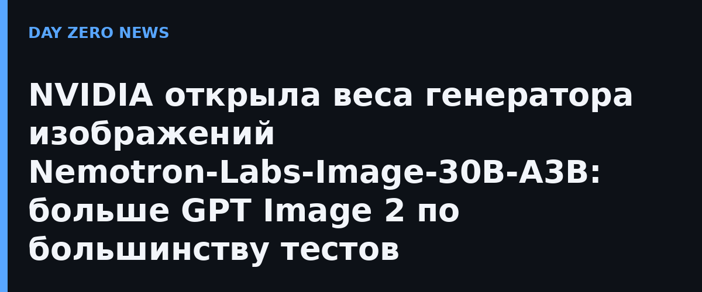

NVIDIA опубликовала на Hugging Face веса модели Nemotron-Labs-Image-30B-A3B — авторегрессионного генератора растровых изображений, построенного на базе Nemotron 3 Nano: 30 млрд параметров суммарно и лишь 3 млрд активных на токен. Вместе с моделью выложены визуальный токенизатор (~642 млн параметров, кодбука из 196 560 векторов решётки Леча, кодирование за 41,3 мс на A100), определение модели и код инференса. Отдельного блог -анонса NVIDIA не делала — веса «тихо» появились на официальной организации nvidia в Hugging Face вместе с техническим исследованием, это и есть первоисточник.
Модель — часть фреймворка Nemotron-Labs-VisualCreation, который NVIDIA описывает как подход «pixel as code»: генератор соединяет выученные визуальные токены с явными программами — SVG, HTML/CSS, графика и разметкой документов. Идея в том, чтобы агент мог не только нарисовать картинку, но и выдать редактируемый артефакт — веб-страницу, презентацию, диаграмму, — а потом сам проверить результат через рендер и «визуальный аудит» другой моделью. Это явный разворот в сторону агентских рабочих процессов, а не просто «ещё одна генерилка».
По официальной модельной карте NVIDIA, конфигурация VisualCreation ведёт на 7 из 10 приведённых бенчмарков: GenEval — 92,86 против 89,00 у GPT Image 2; LongTextBench (текст на картинке) — 97,98 против 96,00; CVTG-2K — 92,53 против 90,03; BizGenEval — 86,0 против 83,2; WISE Verified — 91,50. Закрытая GPT Image 2 остаётся впереди на GenEval2 (81,00 против 65,43) и Qwen-Image-Bench (65,23 против 52,46). С открытыми конкурентами картина похожая: FLUX.2 Dev и Qwen-Image позади почти везде, кроме отдельных текстовых тестов.
Формально это «open weights», но под лицензией NVIDIA с некоммерческим использованием: для продакшена и коммерческих продуктов веса в текущей версии брать нельзя. В первом релизе открыт только растровый генератор с токенизатором — структурированные компоненты (VisionCode на 30B и 120B параметров, показавшие 93,6 против 56,5 у Nemotron-3-Nano-Omni в тестах визуального кода) пока остаются за кадром.
Для открытой экосистемы это редкий случай: авторегрессивная (не диффузионная) модель генерации картинок конкурентоспособного уровня плюс исследовательский фреймворк, где генерация встроена в агентский цикл «создал — отрендерил — проверил — починил». Для небольших команд это шанс собрать пайплайн генерации инфографики и макетов локально, без платных API — с поправкой на некоммерческую лицензию весов.